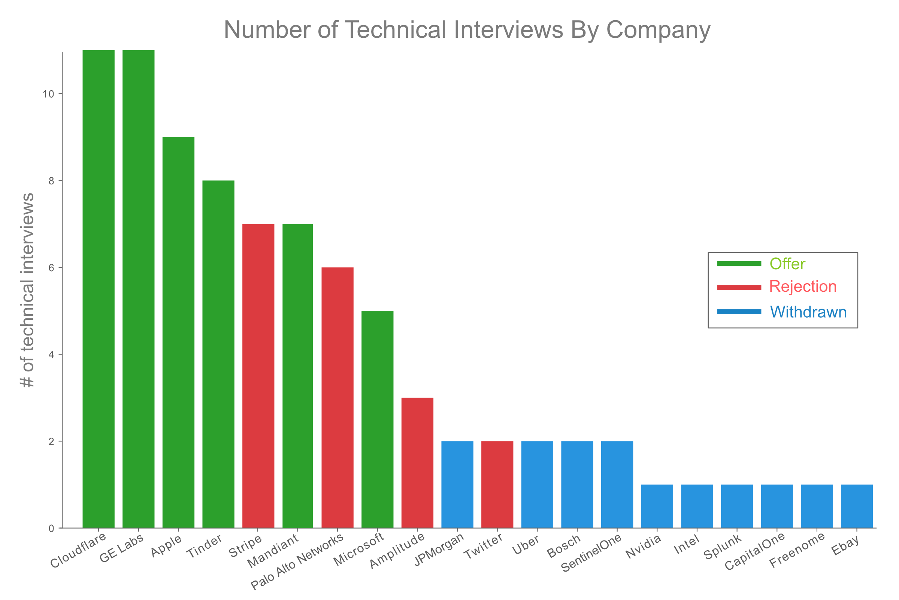
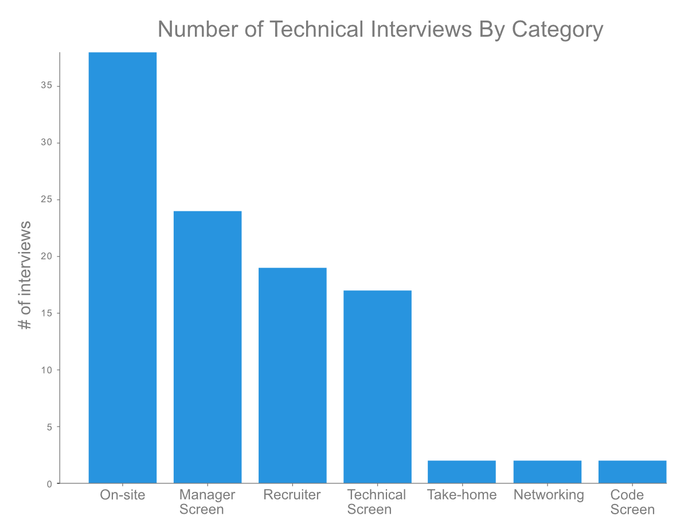

My 10 week journey took 137 hours and culminated in 7 on-site interviews with Apple, Microsoft, Cloudflare, Mandiant, Stripe, Tinder and GE Labs,
leading to offers from all but Stripe. Plus one additional offer from Amazon based on a summer internship. I was rejected from 6 teams (mostly due to Leetcode screens),
never heard back from 5, and withdrew from 18 due to poor fit, no remote work, or not enough time. Figure 1 summarizes my job hunt journey with each company, along with the outcome.
| Figure 1. 2021 ML PhD job hunt took 10 weeks and 137 hours |
{kind=link}
For some other great perspectives on the topic, check out “Job Hunt as a PhD in AI / ML / RL: How it Actually Happens”
and My Machine Learning Research Jobhunt.
I. Preparing for the Job Hunt
When starting the job search I had a heaps of questions and scant knowledge on how to get started. Looking back, there are two things to do before entering the ML job market—(1) market research and (2) understand your objectives.
Market Research
This post assumes you enjoyed your PhD research—whether that’s NLP, computer vision, machine learning, data mining, robotics, etc—and want to continue this line of research in industry. If that’s not the case, try exploring new application domains (e.g., healthcare, cybersecurity, art) and see if they spark your interest while allowing you to flex your hard earned research skills.
Job Titles. First things first, let’s differentiate the plethora of ML job titles—Data Engineer, ML Engineer, Data Analyst, Data Scientist, Applied Scientist, and Research Scientist, to name a few. While the exact job descriptions vary, the general idea is that Data Engineers construct the databases and pipelining, ML Engineers write production code and develop the internal ML tooling, Data Analysts perform high-level business analysis, and Data/Applied/Research Scientists do research on open-ended business problems. Generally speaking, Data/Applied Scientists support a product team, while Research Scientists focus on long-term R&D, which may or may not be product related. Keep in mind that there are MANY more Data/Applied Scientist positions than Research Scientist, so if you’re aiming for the latter, be prepared for a competitive job hunt.
Leveling. The level you’re hired in at significantly impacts your early career, and for better or worse, there’s no “standard level” for ML PhD graduates. When applying to tech companies, unless you know someone who’s recently gone through the process, you’re likely flying blind on leveling. Based on my experience, and talking with colleagues, new ML PhDs should target L5 at Amazon, ICT3 at Apple, and level 63 at Microsoft. With these as a baseline, you can use Levels.fyi to identify your target level at other companies.
Depending on the team, your research background, and how well you interviewed, there’s a good chance you’ll receive offers at a level lower (occasionally higher). Not to worry though, this is NOT an indicator that other companies will do the same. Just keep interviewing. While it’s possible to negotiate a level jump if a company really wants you and you have strong competing offers, I haven’t seen it happen.
Compensation. Do your market research. Look at the salaries for relevant positions on AI Paygrades and Levels.fyi. AI Paygrades has great data but it’s limited to Big Tech, while Levels has a lot more data but it’s often below market rate for ML research positions (sometimes by a significant amount).
Total compensation (TC) is highly negotiable, especially at Big Tech companies. If you interviewed well, and have one or more competing offers, you can easily increase your TC by 20-50%. For a fantastic deep dive on the job negotiation process, check out Ten Rules for Negotiating a Job Offer and How not to bomb your offer negotiation. Whether you realize it or not, negotiations begin the moment you interact with a recruiter.
Understand your Objectives
What’s important to YOU in a job? Pay, mission, culture, research, location, remote work, teammates, work-life balance, perks, prestige, title? There are so many factors comprising a well-balanced career that it’s hard to get it all in equal proportion. Carefully rank your key criteria and then observe/probe for them during your interviews. After all, job interviews aren’t just about impressing your future colleagues…they’re an opportunity to assess your future work life. These people will be your boss, teammates, colleagues, and (hopefully) friends for the next few years. Life will be much more enjoyable if you like working with them.
In particular, try to assess the following during your interviews:
Work-life Balance. This should be a given, but the unfortunate reality is that some companies view an employment agreement as euphemism for owning your soul. No one wants to start a new job only to find themselves burnt out after a few months. Be on the lookout for tell-tale warning signs—(a) burnt out, unengaged, or gloomy interviewers; (b) offhand interviewers comments about about unrealistic expectations, long work hours, or management issues; and (c) toxic comments like “only looking for all-stars” or “top performers”. If in doubt, ask the interviewers how they feel about the job. If it’s really terrible, they may relish an opportunity to vent their frustrations.
Research Alignment. Identifying whether a team is research focused or engineering heavy is pretty straightforward. Do all your interviews involve Leetcode problems? If so, it’s probably an engineering team. On the other hand, if the interviews focus on your ability to solve open challenges and discuss research trade-offs, it’s probably a research team. There’s no right or wrong here…maybe you’re tired of research and want to do engineering work. Either way, it’s important to understand how the team’s mission aligns with your agenda. Also if you’re interested in continuing to publish, be sure to check it’s something they support. Just because they’re a research team, doesn’t mean they want you sharing your latest and greatest breakthroughs with the rest of the world.
Culture. Every team has its own unique sub-culture (you are working with people after all!). Observe how the team interacts with you during the interviews—are they all business, do they have a sense of humor, are they easy to get along with? While it’s tempting to gloss over shortcomings when you’re offered a great compensation package—DO NOT DO IT. If things are strained now, they’ll be 10x worse after you join. It’s essential to your mental health that you enjoy your work and teammates.
Team Composition. You’ve probably just spent the last few years of your PhD working in isolation, and team composition is the last thing on your mind. Let’s change that. In industry, successful projects require a diversity of talent that no single person has on their own. Imagine you have the option to work with 3 different teams—Team X has 5 ML researchers; Team Y has 3 ML engineers and 2 data engineers; and Team Z has 2 ML researchers, 2 ML engineers, and 1 data engineer. Which team do you want to work with?
If your job is pure research, Team X might be okay—you’re probably building out proof-of-concepts rather than production level systems. What if you’re an applied scientist supporting a product team? Do you want to do the research, build the ML tooling, and handle all the data pipelining? I think not. Suddenly Team Y looks great with all that engineering talent, but wait… what happens when you get stuck on some challenging research? Who’s going to brainstorm with you? This brings us to Team Z. Their mix of data/ML engineers with researchers offers everything you need to succeed.
While the example is fiction, it’s not too far from reality. And the fundamental lesson still applies—you need a diverse team to support your best work.
Expectations. Interviews are a great opportunity to glean information on team culture and dynamics. Try asking a few of these questions at the end of each interview (some are for interviewers, managers, or both):
- Can you discuss a few of the team’s recent research projects?
- Which projects do you have in mind for this position?
- Are projects team based, solo, or a mix?
- What would exceeding this positions goals look like to you?
- What software stack does the team use?
- Are your work hours set or flexible?
- Are there on-call requirements?
- Are there any reading groups?
- Are there weekly team meetings and manager 1:1’s? Daily standups?
Location, Location, Location. Machine learning talent is in high demand and remote jobs are an increasingly common perk. In 2021, a majority of the companies I interviewed with allowed or encouraged remote work, while a few places offered “back to office” plans. I believe the best research gets done by employees who live and work where they thrive (i.e., near family, friends, loved ones).
On the flip side, you need to consider how geographically dispersed the team is. If your colleagues are spread across the world, collaboration will be harder.
Career Advancement Opportunities. This is one of the hardest things to evaluate for during interviews. You can try probing the interviewers with questions like: “How long have they been in your current role?”, “What’s expected to advance?”, and “How often do people get promoted?”. Alternatively, you can directly ask the hiring manager what the expectations are to advance in this role.
It’s also worth considering how team composition can play into your advancement opportunities. For example, if you’re the only ML researcher on the team, advancement opportunities could be great (i.e., they love your work and want to build a team around you), or terrible (i.e., you wear a ton of hats and always have to justify your work). On the other hand, working on large team of ML researchers likely has an advancement path already in place.
II. The Art of Interviewing
A successful job hunt is a marathon, not a sprint. The following is my personal take on navigating the ML market, ranging from interview preparation to managing offers.
Interview Preparation
There are 5 main components to an ML PhD interview—(1) coding questions, (2) behavioral questions, (3) fundamental ML questions, (4) open-ended research questions, and (5) a research talk. Depending on the position, components 1 and 5 may not exist, but 2-4 almost always do. Behavioral questions are pretty straight forward, while open-ended research questions are incredibly difficult to prepare for (aside from brushing up on your own papers). As a result, most of your cycles should be spent reviewing fundamental ML concepts. Note: currently working on a post outlining the most common cross-company ML interview questions.
While I didn’t prepare for coding exercises (i.e., Leetcode questions), this likely cost me a few on-site interviews. I’ll save my rant against Leetcode style questions for ML research interviews for another day though. If you’re interested in preparing for these type of questions, I recommend checking out Don’t Just LeetCode; Follow the Coding Patterns Instead. A few of the common patterns I remember seeing are Sliding Window, BFS/DFS, Subsets, Bitwise XOR, and Fibonacci Sequence. In addition, some companies will ask you to squash a bug, solve a business related problem, and calculate the time and space complexity of various algorithms.
Lining up Interviews
Your #1 priority at this stage is maximizing the number of interview opportunities you have before making a decision. This is of course easier said than done, as you can see from my semi-successful attempt in Figure 1. The difference between poor and great execution of your interview lineup is dramatic; the former often cut the job hunt short to respond to early offers, while the latter accumulate more opportunities to land their dream job.
Once you’re confident in your interview preparation, and your CV and LinkedIn are up to date, spend 1-2 intense weeks applying to jobs. Apply widely, and don’t be afraid to shoot for jobs where you don’t meet every listed requirement. The worst that can happen is you don’t hear back.
There are 3 main ways to land a job interview, not all of which are equal:
-
Recruiter and Manager Reach Out. LinkedIn will be your bread and butter for the next two weeks, enabling you to connect with recruiters and hiring managers. There’s no better way to land a job interview than directly talking with the person doing the hiring. The key to finding relevant leads is as simple as searching for “Company X Data Science Recruiter” or “Company Y ML Hiring Manager”.
Once you’ve identified a list of candidates, craft a short message expressing your interest and why you’re a great applicant. This is easily 5x more effective than applying through the company portal where applications can go through multiple screenings (automated filter –> recruiter –> hiring manager), significantly decreasing your chance of getting seen.
-
Referrals. Leverage your network, friends, colleagues, and acquaintances for or an introduction to a hiring manager. The worst they can do is say no. This is way more powerful than a formal hiring referral, which as far as I’m concerned isn’t worth the time it takes to build the system. While I managed to snag a few interviews using my network, none of them came from “portal referrals”.
-
Online Company Portal. Applying through the company job portal is a mixed bag. I got a handful of interviews this way, but most of the time it was automated “thanks, but no thanks” email, or complete radio silence. For the ones that did respond, it was mostly mid to small sized companies. While it’s worth shooting your shot, I wouldn’t bank on it as a primary source of interviews.
Understanding the Interview Process
The typical interview process has 4 stages—(1) chat with the recruiter or hiring manager, (2) pass 1-2 technical screens, (3) do 4-6 on-site interviews, and (4) meet with the recruiter to discuss the offer.
Your first chat to your final on-site interview usually takes 2-3 weeks and an average of 8 interviews. If you pass the technical screen, you’ll likely be scheduled for a virtual on-site within a few days. You’ll generally know whether you’re getting an offer within a week. Check out Figure 2 below where I break down the number of interviews I did by company.
|  |
|---|
| Figure 2. Number of technical interviews at each company |
Depending on the role and company you’re applying to, there can be additional steps in the interview process. For example, you may be asked to give a research presentation, take online code screens, read research papers, or complete take home exams. One of the most comical interview requests I received was to spend 10-15 hours working on an open-ended research problem…just to complete their pre-interview process?! SMH, they definitely need to pay if they want that.
For the most common interview types, take a look at Figure 3 where I aggregate all my interviews by category. This should be pretty representative of what you’ll encounter in your job search.
|  |
|---|
| Figure 3. Number of interviews across all companies by category |
At the peak of the job hunt, you can easily have a few days of 7+ back-to-back interviews. My worst day was 10 interviews with 4 different companies. The only thing that kept me going was the thought of seeing those beautiful golden handcuffs at the end of the tunnel.
Managing Offers
This is arguably the most enjoyable part of the process. After surviving the interview gauntlet and working like a dog, you’ve likely received a couple of offers.
Sharing the Good News. Don’t be afraid to let other companies know you recently received an offer with an upcoming response deadline. Nothing increases your desirability more than other tech companies wanting to snatch you up. If you play your cards right, you can (1) get unresponsive recruiters to set up technical screenings, (2) improve your hiring manager response rate on LinkedIn, (3) increase your odds of transitioning from technical screenings to on-site interviews by mentioning you’re now on the clock to make a decision, and (4) if you just finished your on-site interviews, you can casually let them know you have other pending offers, increasing your chances of a (better) offer. For better or worse, humans make hiring decisions in line with their psychological instincts—which is that we want what is highly desired by others. Think of it this way, it’s another indicator that you’re a quality candidate they shouldn’t pass up.
Exploding Offers. You’ll likely get a few short window offers (1-2 weeks), and even worse an occasional “exploding offer” (1-3 days). When big companies do this, they’re attempting to force your hand into making a rushed decision. When this happens you need to take a deep breath and politely explain that you need more time to complete your job hunt and make an informed decision. After all, this is a huge life decision that shouldn’t be made in the vacuum of a couple of days—you need to talk with your family and significant others. At this point the recruiter will likely relent and ask you how much time you need. If not, reach out to the hiring manager and explain the situation. Odds are you’ll get the extra time.
If you’re still unconvinced, think of it this way—the team has already decided you are the best candidate. They’ve invested a huge amount of time and money recruiting and interviewing you, and they don’t want you to walk out the door over something like this. That said, occasionally a mid to small-sized company will give you a short time window out of a real business need. For example, they may have 2nd choice candidate who they would give the offer to if you don’t accept it, but that other candidate can’t wait because they have an offer with a response deadline.
Negotiating. Big Tech equals Big Money. As a rule of thumb, a large tech company can offer you 50-80% more than any other company on the market. Of course they need to have the right incentives, which normally comes in the form of competing offers. Keep in mind that nearly everything is negotiable, and that you should negotiate every…single…offer. No one is going to be offended that you tried to come away with a better offer, that’s the name of the game. Whether you want a different title, level, location (e.g., remote), base salary, starting bonus, stock, or time off—consider it on the table. Check out the blog posts listed in Section I. Preparing for the Job Hunt for fantastic negotiating advice, there’s nothing I can add that isn’t already summarized there.
The only thing that I’ll repeat is that you should never…ever…provide your salary expectations upfront. Always defer until they share the range for the position. Yes, there are exceptions to the rule, but they’re called exceptions for a reason. Once you have a range for the position, be upfront if it’s within your expectations. There’s no point in continuing the process if you wouldn’t even consider the offer.
Okay‚Ķthat‚Äôs it! Good luck on the job hunt üôÇÔ∏è